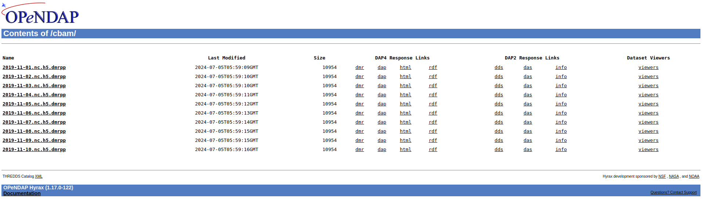
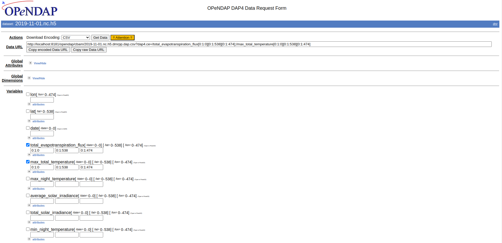

13. Hyrax Configuration¶
Hyrax is a data server developed by OPeNDAP as a reference server for the Data Access Protocol, versions 2 and 4. This documentation shows how to integrate Hyrax into GAP Platform to read NetCDF files that are hosted in S3 Object Storage.
13.1 Pre-requisites¶
- NetCDF Files hosted in a S3 bucket
- AWS_ACCESS_KEY_ID and AWS_SECRET_ACCESS_KEY
- AWS_ENDPOINT_URL (optional) if using a different storage server (e.g. minio)
- Local volume for mounting file cache
- Hyrax image: opendap/hyrax:1.17.0-122
- PyDAP package for reading URL from OpenDAP: pydap==3.4.1
- numpy==1.26.4 is needed for pydap that is not compatible with latest numpy version
13.2 Important Notes¶
When NetCDF files are hosted in S3, we can leverage DMR++ files to access the NetCDF file using subsetting. This is useful to avoid caching the full NetCDF file before reading it. To learn more about DMR++, click here.
However, the downside is that we need to generate DMR++ files first and put them in the Hyrax data directory. Use below command to generate the DMR++ file.
get_dmrpp -b $(pwd) -o output.dmrpp -u http://minio:9000/tomorrownow/cbam/2019-11-06.nc.h5 s3://tomorrownow/cbam/2019-11-06.nc.h5
- http://minio:9000/tomorrownow/cbam/2019-11-06.nc.h5 is a URL to access the file. This URL will be included in the output.dmrpp file
- s3://tomorrownow/cbam/2019-11-06.nc.h5 is the location that get_dmrpp binary will try to find the NetCDF file
- get_dmrpp binary will use aws cli and it's recommended to upgrade to aws cli v2 to support endpoint-url in the AWS config file.
- Configure endpoint-url in ~/.aws/config if endpoint-url is not a default AWS URL (e.g. minio).
13.2.1 CBAM Datasets¶
We need to rename the NetCDF Files from CBAM to make the Hyrax and get_dmrpp binary able to read the files. The Hyrax is using a regex to determine the Backend Module for reading and the CBAM files seems to be a HDF5 files.
13.2.2 Salient Datasets¶
We encountered error when generating DMR++ file for Salient Data Sample file, so the only option is to copy the whole NetCDF file into Hyrax Data Directory. When checking the type of NetCDF using command ncdump -k downscale_2024-03-13_rwanda.nc, the type is 64-bit offset which may not compatible with get_dmrpp binary. However, we do not need to rename the file with h5 like we do for CBAM datasets.
13.3 Custom site.conf¶
Below is the custom configuration for Hyrax:
# allow minio to allowed host Hyrax for dev
AllowedHosts+=^http:\/\/minio\:9000\/.*$
Gateway.Whitelist+=http://minio:9000
# use parallel transfers
DMRPP.UseParallelTransfers = yes
# fix error on finding effective url during caching
Http.cache.effective.urls=false
# credentials manager
CredentialsManager.config=/etc/bes/credentials.conf
DAP.GlobalMetadataStore.path = /usr/share/mds
DAP.Use.Dmrpp = yes
13.4 S3 Credentials¶
To allow Hyrax accessing S3, the credentials.conf must be used. We created a custom entrypoint.sh script that will write during the startup of the container.
#!/bin/bash
file="/etc/bes/credentials.conf"
if [ -f "$file" ] ; then
rm "$file"
fi
touch "$file"
echo "tomorrownow = url:${AWS_ENDPOINT_URL}${S3_AWS_BUCKET_NAME}/" >> "$file"
echo "tomorrownow += id:${AWS_ACCESS_KEY_ID}" >> "$file"
echo "tomorrownow += key:${AWS_SECRET_ACCESS_KEY}" >> "$file"
echo "tomorrownow += region:us-east-1" >> "$file"
echo "tomorrownow += bucket:${AWS_ENDPOINT_URL}" >> "$file"
chmod 600 "$file"
chown bes:bes "$file"
# run original entrypoint
./entrypoint.sh
13.5 Hyrax Service in docker compose files¶
docker-compose.yml
hyrax:
image: opendap/hyrax:1.17.0-122
ports:
- "8181:8080"
environment:
- AWS_ACCESS_KEY_ID=${AWS_ACCESS_KEY_ID:-minio_tomorrownow}
- AWS_SECRET_ACCESS_KEY=${AWS_SECRET_ACCESS_KEY:-minio_tomorrownow}
- AWS_ENDPOINT_URL=${AWS_ENDPOINT_URL}
- S3_AWS_BUCKET_NAME=${S3_AWS_BUCKET_NAME:-tomorrownow}
volumes:
- hyrax-data:/usr/share/hyrax
restart: always
docker-compose.override.yml
hyrax:
entrypoint: [ "/custom_entrypoint.sh" ]
volumes:
- ./volumes/hyrax_data:/usr/share/hyrax
- ./hyrax/site.conf:/etc/bes/site.conf:ro
- ./hyrax/entrypoint.sh:/custom_entrypoint.sh
links:
- django
- worker
/volumes/hyrax_data is the volume for storing cache of dmrpp files or Salient data files.
13.6 Accessing Hyrax UI¶
Hyrax has a UI that can be accessed in http://localhost:8181/opendap/.

We can query using html UI and export the data into different format like csv.

Note: we can use slicing syntax to access the data: [start:step:end].
13.7 Accessing using Python Script¶
13.7.1 CBAM Dataset¶
from pydap.client import open_url, open_dods_url
CBAM_METADATA = {
'lon': {
'min': 26.9665,
'inc': 0.036006329,
'size': 475
},
'lat': {
'min': -12.5969,
'inc': 0.03574368,
'size': 539
}
}
def find_idx(value, base_min, inc):
return round((value - base_min) / inc)
# Function to slice along multiple specified axes
def slice_along_axes(array, indices):
slices = [slice(None)] * array.ndim # Create a list of slices
# Set the slices for the specified axes
for axis, index in indices.items():
slices[axis] = index
return array[tuple(slices)]
search_lat = -3.25
search_lon = 30.4
idx_lat = find_idx(search_lat, CBAM_METADATA['lat']['min'], CBAM_METADATA['lat']['inc'])
idx_lon = find_idx(search_lon, CBAM_METADATA['lon']['min'], CBAM_METADATA['lon']['inc'])
dataset = open_url('http://hyrax:8080/opendap/cbam/2019-11-09.nc.h5.dmrpp')
mtt = dataset['max_total_temperature']
result = slice_along_axes(mtt['max_total_temperature'], {1: idx_lat, 2: idx_lon})
print(result)
13.7.2 Salient Dataset¶
from pydap.client import open_url, open_dods_url
SALIENT_METADATA = {
'lon': {
'min': 28.875,
'inc': 0.25,
'size': 9
},
'lat': {
'min': -2.875,
'inc': 0.25,
'size': 8
}
}
def find_idx(value, base_min, inc):
return round((value - base_min) / inc)
# Function to slice along multiple specified axes
def slice_along_axes(array, indices):
slices = [slice(None)] * array.ndim # Create a list of slices
# Set the slices for the specified axes
for axis, index in indices.items():
slices[axis] = index
return array[tuple(slices)]
search_lat = -2.215
search_lon = 29.125
idx_lat = find_idx(search_lat, SALIENT_METADATA['lat']['min'], CBAM_METADATA['lat']['inc'])
idx_lon = find_idx(search_lon, SALIENT_METADATA['lon']['min'], CBAM_METADATA['lon']['inc'])
dataset = open_url('http://hyrax:8080/opendap/salient/downscale_2024-03-13_rwanda.nc')
temp_clim = dataset.temp_clim
result = slice_along_axes(temp_clim['temp_clim'], {1: idx_lat, 2: idx_lon})
print(result)